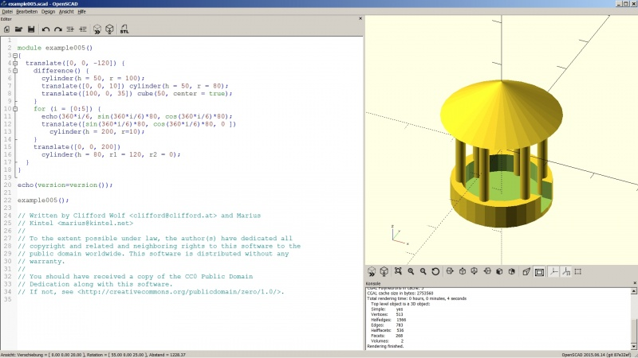

|
| Argomento |
|---|
| Importare codice OpenSCAD |
| Livello di difficoltà |
| Base |
| Tempo di esecuzione |
| 30 minuti |
| Autore |
| r-frank |
| Versione di FreeCAD |
| 0.16.6704 |
| File di esempio |
Introduzione
OpenSCAD è un programma open source di CAD 3D, come FreeCAD. Ma mentre FreeCAD utilizza un approccio visivo, OpenSCAD utilizza un'interfaccia di programmazione per eseguire le operazioni in 3D. L'ambiente OpenSCAD di FreeCAD può essere utilizzato per importare il codice OpenSCAD dell'oggetto e per accedere ad alcune delle operazioni sulle mesh possibili con OpenSCAD.
Installare OpenSCAD
Gli utenti Mac possono scaricare i file binari da OpenSCAD homepage.
Gli utenti Linux Ubuntu/Mint possono installarlo dai repository di sistema o da OpenSCAD homepage.
Gli utenti Windows possono scaricare il programma da OpenSCAD homepage.
Dato che è necessario solo l'eseguibile OpenSCAD, gli utenti Windows di FreeCAD possono installare la versione portabile, se preferiscono.
Configurare l'ambiente OpenSCAD in FreeCAD
- Avviare FreeCAD
- Passare all'ambiente OpenSCAD
- Scegliere Modifica > Preferenze > OpenSCAD dal menu principale
- Indirizzare FreeCAD all'eseguibile di OpenSCAD (sezione: Impostazioni generali di OpenSCAD)
- Tutti gli altri valori nella pagina delle impostazioni possono essere lasciati di default
Il modello di esempio
Qui viene usato il file example005.scad dai (vecchi) esempi OpenSCAD, ma si può utilizzare, a piacere, qualsiasi file scad.

{kind=link}
Importare il modello in FreeCAD
- In FreeCAD scegliere File → Apri e scegliere il file .scad che si desidera importare.
- Non è importante che l'ambiente OpenSCAD sia attivato. L'ambiente OpenSCAD è necessario solo quando si applicano specifiche funzioni al modello.
- FreeCAD importa il file OpenSCAD e costruisce un albero con le primitive e le operazioni booleane.
- Il tutorial è finito.
{kind=link}